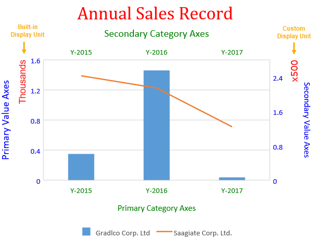
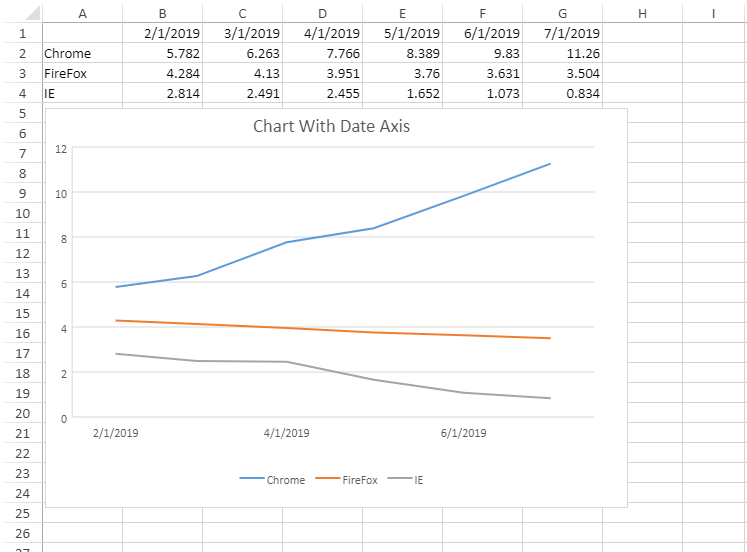
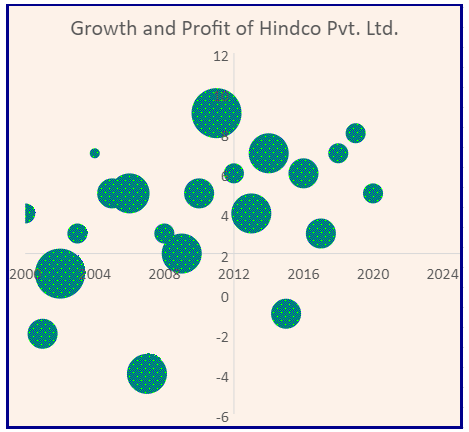
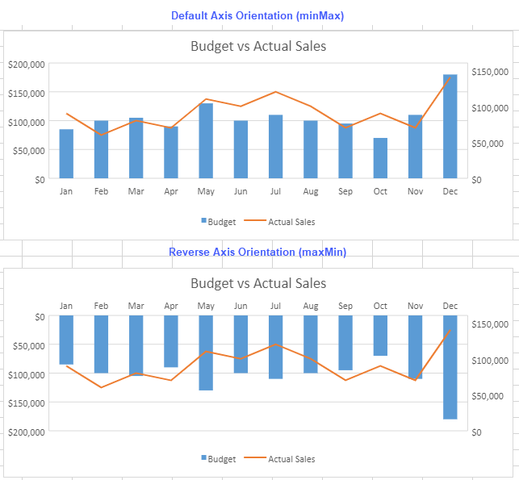
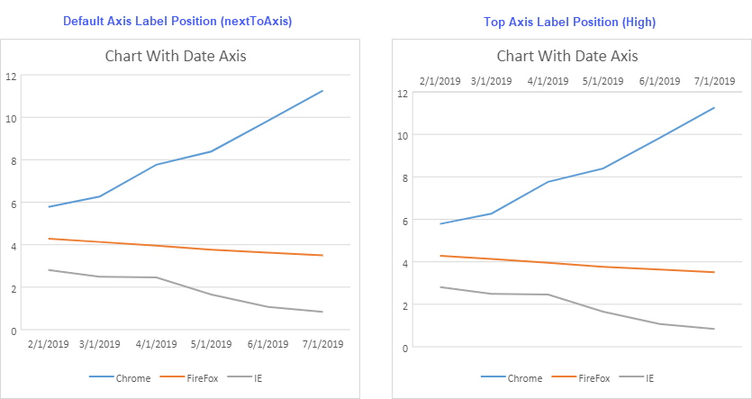

SpreadJS allows users to configure and customize axes in a chart along with the display units.
Axes refers to the dimensions of the plot area in terms of a horizontal scale (x-axis or category axis) and a vertical scale (y-axis or value axis).
Types of Chart Axes: Typically, a basic two-dimensional chart contains four types of axes, namely the primary category axis, the primary value axis, the secondary category axis and the secondary value axis.
Display units can be configured only on the value axis (both primary value axis and secondary value axis).There are two ways to configure axes display units while working with charts in SpreadJS:
The following screenshot depicts a chart with built-in configuration of display unit on primary value axis and custom configuration of display unit on secondary value axis.

Users can get or set the axes of the chart using the axes() method of the Chart class. While working with charts, users can add, modify and customize the axes display units as per their specific requirements and preferences. If users want to delete the axis display units from the chart, then the value of the axis display unit must be set to null.
Supported Chart Types - Any chart type that contains value axis supports the configuration of axis display units. Hence, only primary value axis and secondary value axis are supported.
While working with axis display units, users can choose whether to show or hide the display unit labels. Also, users can modify the default appearance of the display unit labels by changing its font, customizing the font color, and configuring the font family of the display units.
Note: The following limitations must be kept in mind while configuring and customizing the axis display units in a chart:
Using Code
This code shows how to configure Axes along with display unit labels in the chart.
| JavaScript |
Copy Code
|
|---|---|
<script> $(document).ready(function () { // Initializing Spread var spread = new GC.Spread.Sheets.Workbook(document.getElementById('ss'), { sheetCount: 1 }); // Get the activesheet var activeSheet = spread.getActiveSheet(); activeSheet.suspendPaint(); // Prepare data for chart activeSheet.setValue(0, 1, "Y-2015"); activeSheet.setValue(0, 2, "Y-2016"); activeSheet.setValue(0, 3, "Y-2017"); activeSheet.setValue(0, 4, "Y-2018"); activeSheet.setValue(0, 5, "Y-2019"); activeSheet.setValue(1, 0, "Gradlco Corp. Ltd"); activeSheet.setValue(2, 0, "Saagiate Corp. Ltd."); activeSheet.setColumnWidth(0, 120); for (var r = 1; r <= 2; r++) { for (var c = 1; c <= 5; c++) { activeSheet.setValue(r, c, parseInt(Math.random() * 5000)); } } // Add columnClustered chart chart_columnClustered = activeSheet.charts.add('chart_columnClustered', GC.Spread.Sheets.Charts.ChartType.columnClustered, 50, 100, 500, 400); var series = chart_columnClustered.series(); series.add({ chartType: GC.Spread.Sheets.Charts.ChartType.columnClustered, axisGroup: GC.Spread.Sheets.Charts.AxisGroup.primary, name: "Sheet1!$A$2", xValues: "Sheet1!$B$1:$F$1", yValues: "Sheet1!$B$2:$D$2" }); series.add({ chartType: GC.Spread.Sheets.Charts.ChartType.line, axisGroup: GC.Spread.Sheets.Charts.AxisGroup.secondary, name: "Sheet1!$A$3", xValues: "Sheet1!$B$1:$F$1", yValues: "Sheet1!$B$3:$D$3" }); var axes = chart_columnClustered.axes(); // Configure Primary Category Axis axes.primaryCategory.style.color = 'green'; axes.primaryCategory.title.color = 'green'; axes.primaryCategory.title.text = 'Primary Category Axes'; // Configure Primary Value Axis axes.primaryValue.style.color = 'blue'; axes.primaryValue.title.color = 'blue'; axes.primaryValue.title.text = 'Primary Value Axes'; axes.primaryValue.title.fontSize = 16; // Configure BuiltIn DisplayUnit for "Primary Value Axis" axes.primaryValue.displayUnit = { unit: GC.Spread.Sheets.Charts.DisplayUnit.thousands, // BuiltIn DisplayUnit is thousands visible: true, style: { color: 'red', transparency: 0.1, fontFamily: 'arial', fontSize: 14 } }; // Configure Secondary Category Axis axes.secondaryCategory.visible = true; axes.secondaryCategory.style.color = 'green'; axes.secondaryCategory.title.color = 'green'; axes.secondaryCategory.title.text = 'Secondary Category Axes'; axes.secondaryCategory.title.fontSize = 16; // Configure Custom DisplayUnit for "Secondary Value Axis" axes.secondaryValue.displayUnit = { unit: 500, // Custom Display unit is 500 visible: true, style: { color: 'red', transparency: 0.1, fontFamily: 'Verdana', fontSize: 14 } }; // Configure Secondary Value Axis axes.secondaryValue.style.color = 'blue'; axes.secondaryValue.title.color = 'blue'; axes.secondaryValue.format = 'General'; axes.secondaryValue.title.text = 'Secondary Value Axes'; chart_columnClustered.axes(axes); // Configure Chart Title var title = chart_columnClustered.title(); title.text = "Annual Sales Record"; title.fontFamily = "Cambria"; title.fontSize = 28; title.color = "Red"; chart_columnClustered.title(title); activeSheet.resumePaint(); }); </script> |
|
SpreadJS allows users to configure dates on category axis by configuring it as date (time-scale) axis.The data of days, months or years can be plotted on the category axis using various properties, like:
The difference in the intervals of base unit is the smallest difference between the units which can be accommodated by the size of chart. However,this difference can be customized by specifying the value of interval number between two tick marks by using the MajorUnit and MinorUnit properties.
The following screenshot depicts a chart showing the average viewing time of a webpage on three different browsers in different months. The category axis has been configured as date axis with months as its base unit and 2 as the interval number value between two major tick marks.

Note: Hours, minutes and seconds are not supported by date axis.
If value of minorUnitScale is more than majorUnitScale, it will not work for minorUnitScale.
Using Code
| JavaScript |
Copy Code
|
|---|---|
// initializing Spread
var spread = new GC.Spread.Sheets.Workbook(document.getElementById('ss'), { sheetCount: 1 });
// get the activesheet
var activeSheet = spread.getActiveSheet();
// create array
var dataArray = [
["", new Date(2019, 1, 1), new Date(2019, 2, 1), new Date(2019, 3, 1), new Date(2019, 4, 1), new Date(2019, 5, 1), new Date(2019, 6, 1)],
["Chrome", 5.782, 6.263, 7.766, 8.389, 9.830, 11.260],
["FireFox", 4.284, 4.130, 3.951, 3.760, 3.631, 3.504],
["IE", 2.814, 2.491, 2.455, 1.652, 1.073, 0.834],
];
// set columns width
for (var i = 0; i < 8; i++) {
activeSheet.setColumnWidth(i, 80.0, GC.Spread.Sheets.SheetArea.viewport);
}
// set array
activeSheet.setArray(0, 0, dataArray);
// set date formatter for a range
activeSheet.getRange(0, 0, 1, 7).formatter("m/d/yyyy");
// add chart
var chart = activeSheet.charts.add('ChartWithDateAxis', GC.Spread.Sheets.Charts.ChartType.line, 2, 85, 400, 400, 'A1:G4');
// set chart title
chart.title({ text: "Chart With Date Axis" });
// set chart axes properties
var axes = chart.axes();
// Setting primaryCategory i.e. DateAxis properties
axes.primaryCategory.baseUnit = GC.Spread.Sheets.Charts.TimeUnit.months;
axes.primaryCategory.majorUnit = 1;
// axes.primaryCategory.minorUnit = 1;
axes.primaryCategory.majorUnitScale = GC.Spread.Sheets.Charts.TimeUnit.months;
// axes.primaryCategory.minorUnitScale = GC.Spread.Sheets.Charts.TimeUnit.days;
chart.axes(axes);
});
|
|
You can customize the horizontal axis cross value to change the appearance of the charts, just like in Excel. The crossed axis in a chart is useful to represent data in cases where data points fall between both positive and negative values.To support this, the AxisCrossPoint enumeration provides the following three options.
You can adjust the crosses position by using the crossPoint property of primaryCategory and primaryValue class.
Let's see how we can set the crossed axis of a chart. For example in the following use-case, let's say a user wants to evaluate the profit amount before and after 2012 wherein growth exceeds or falls behind 2 percent. In order to represent the growth and profit of the company, we are using a bubble chart where each bubble represents the growth and profit incurred in a particular year. The data labels which we see while hovering on the bubbles will display the growth percent and Profit amount in a particular year.
To analyze the profit amount in which the growth exceeds or falls behind 2 percent, the crossPoint value for primaryCategory (Y-axis) is set to 2012, and the crossPoint for primaryValue (or X-axis) is set to 2. With this crossPoint positioning, the user can easily segregate and comprehend the 'growth' and 'profit amount' data in all the four quadrants of the chart. Using the left upper and lower quadrants of the chart, the user can analyze the profit amount in the years before 2012, where the growth exceeds or falls short of 2 percent. Similarly, using the right upper and lower quadrants of the chart, the user can clearly evaluate the profit amount in the years after 2012, where the growth exceeds or falls behind the value of 2 percent.

Using Code
This code shows how to configure crossed axis in charts.
| JavaScript |
Copy Code
|
|---|---|
<script>
$(document).ready(function () {
// initializing Spread
var spread = new GC.Spread.Sheets.Workbook(document.getElementById('ss'), { sheetCount: 1 });
// get the sheet
var sheet = spread.getSheet(0);
sheet.suspendPaint();
// set column width
sheet.setColumnWidth(0, 80);
sheet.setColumnWidth(1, 90);
sheet.setColumnWidth(2, 110);
// create data array
var dataArray = [
["Year", "Growth (%)", "Profit Amount ($)"],
[2000, 4, 3123123],
[2001, -2, 4123123],
[2002, 1, 8456456],
[2003, 3, 2345435],
[2004, 7, 1768678],
[2005, 5, 5453456],
[2006, 5, 6676878],
[2007, -4, 7434234],
[2008, 3, 3834234],
[2009, 2, 6756756],
[2010, 5, 5672123],
[2011, 9, 9743546],
[2012, 6, 3464513],
[2013, 4, 7431545],
[2014, 7, 7456456],
[2015, -1, 4567687],
[2016, 6, 4870231],
[2017, 3, 4353453],
[2018, 7, 3459021],
[2019, 8, 2390123],
[2020, 5, 2302303],
];
// set data array
sheet.setArray(0, 0, dataArray);
// add chart
var chart = sheet.charts.add('BubbleChart1', GC.Spread.Sheets.Charts.ChartType.bubble, 320, 30, 620, 400, "A2:C22");
// hide gridlines from the chart
var gridLinesAxes = chart.axes();
gridLinesAxes.primaryCategory.majorGridLine.visible = false;
gridLinesAxes.primaryValue.majorGridLine.visible = false;
chart.axes(gridLinesAxes);
// get the series and set its backcolor with a pattern
var series = chart.series().get();
var seriesItem = series[0];
seriesItem.backColor = {
type: GC.Spread.Sheets.Charts.PatternType.dottedPercent40,
foregroundColor: "blue",
backgroundColor: "lime",
}
chart.series().set(0, seriesItem);
// Configure ChartArea
var chartArea = chart.chartArea();
chartArea.backColor = "#FDF2E9";
chartArea.fontSize = 16;
// Set ChartArea's Border Style
chartArea.border.width = 3;
chartArea.border.color = "darkblue";
chart.chartArea(chartArea);
// set title for chart
var title = chart.title();
title.fontSize = "22.00";
title.text = "Growth and Profit of Hindco Pvt. Ltd.";
chart.title(title);
// hide legend of the chart
var legend = chart.legend();
legend.visible = false;
chart.legend(legend);
// set crossPoint for x & y axis
var axes = chart.axes();
axes.primaryCategory.crossPoint = 2012; // y axis
axes.primaryValue.crossPoint = 2; // x axis
chart.axes(axes);
// set the style for cells
var style = new GC.Spread.Sheets.Style();
style.font = "bold 12px Arial";
style.foreColor = "white";
style.backColor = "#5B9BD5";
style.hAlign = GC.Spread.Sheets.HorizontalAlign.center;
style.vAlign = GC.Spread.Sheets.VerticalAlign.center;
for (var i = 0; i < 3; i++)
sheet.setStyle(0, i, style, GC.Spread.Sheets.SheetArea.viewport);
sheet.resumePaint();
});
</script>
|
|
You can control the orientation of chart axes and choose to display it in the reverse order as well. The below image depicts the default and reverse orientation of primary value axis.

The orientation property can be set to 0 (for default order) or 1 (for reverse order). Alternatively, it can also be set to minMax (default) or maxMin (reverse) values of AxisOrientation enumeration.
Using Code
This code shows how to set the default and reverse axis orientation in a chart.
| JavaScript |
Copy Code
|
|---|---|
var axesMin = minMaxChart.axes(); axesMin.primaryValue.scaling = { orientation: GC.Spread.Sheets.Charts.AxisOrientation.minMax // or //orientation: 0 }; minMaxChart.axes(axesMin); var axesMax = maxMinChart.axes(); axesMax.primaryValue.scaling = { orientation: GC.Spread.Sheets.Charts.AxisOrientation.maxMin // or //orientation: 1 }; maxMinChart.axes(axesMax); |
|
Limitation
The axis orientation cannot be set for pie, sunburst, treemap, and funnel charts.
You can set the position of axis data labels in a chart by using tickLabelPosition property. The data labels can be placed in the following positions by using TickLabelPosition enumeration:
The image below depicts the default and high label position of data labels for primary category axis.

The following example sets the default and top axis data label positions in a chart.
| Example Title |
Copy Code
|
|---|---|
// set chart axes properties var axesTickDefault = chart.axes(); // set tickLabelPosition to default nextToAxis axesTickDefault.primaryCategory.tickLabelPosition = GC.Spread.Sheets.Charts.TickLabelPosition.nextToAxis; // or // axesTickDefault.primaryCategory.tickLabelPosition = 2; chart.axes(axesTickDefault); var axesTickHigh = chart.axes(); // set tickLabelPosition to High axesTickHigh.primaryCategory.tickLabelPosition = GC.Spread.Sheets.Charts.TickLabelPosition.high; // or // axesTickDefault.primaryCategory.tickLabelPosition = 0; chart.axes(axesTickHigh); |
|